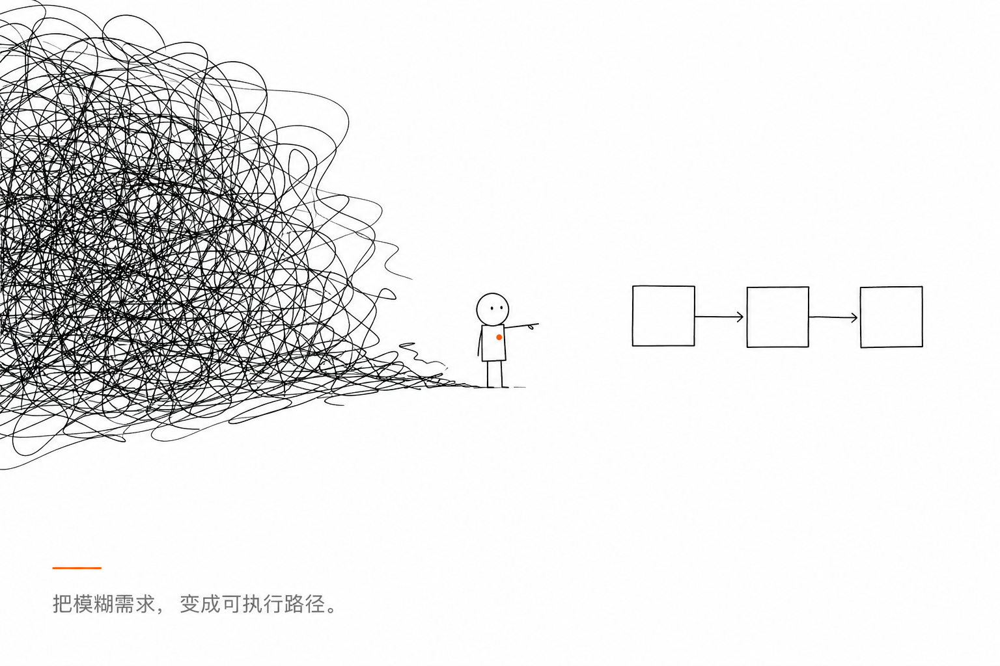
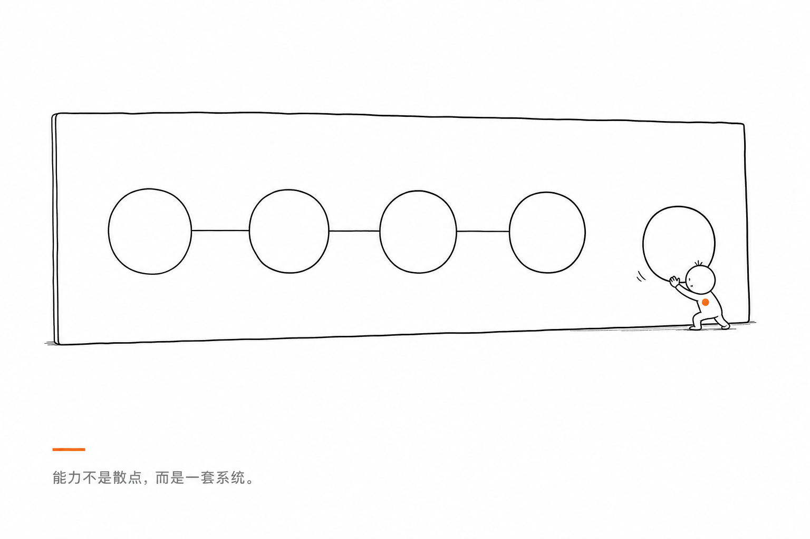

Demo 03+
即将上线
更多项目
数据分析看板、AI 短剧制作流、Excel 核对工具等 Demo 持续追加中。
AI CODING · 数据分析 · 报告撰写
我不是只会用 AI，我是把 AI 变成工作系统。
本地自动化、跨文档数据核对、正式报告与 AI 内容创作——沉淀为可复用的 Skill 与项目 Demo。
PORTFOLIO · 能力证据
每个项目独立页面，后续可持续追加。点击卡片进入完整 Case Study。
多源意见 → 对照表 → 改前改后核对 → 截图证据链（脱敏演示）
微信发指令，Agent 选 Skill，Windows 本地执行并回传结果。
本页预览数据分析看板、AI 短剧制作流、Excel 核对工具等 Demo 持续追加中。
我的特点

不是临时问 AI，而是把任务拆成固定步骤、脚本、Skill 和交付标准。
让 AI 理解任务、选择工具、操作本地环境，并把结果返回给真实用户。
能处理表格、公式、核对、趋势和结论，让数据服务决策，而不是停在截图。
能把散乱素材整理为结构清晰、证据可追溯、适合交付的正式报告。
SKILL OPERATING SYSTEM
我会把常见任务沉淀成 Skill：什么时候触发、读什么材料、跑什么脚本、生成什么结果、失败怎么处理。这样每次交付都会变得更快、更稳、更可复用。

代表项目 · 能力证据
一个用微信远程控制 Windows 电脑的 AI Coding 项目。它证明我能把手机入口、Agent、Skill、PowerShell 脚本和本地自动化串成真实可用的系统。

完成桌面信息读取、数据趋势整理和报告草稿生成。
AI CONTENT CREATION
写过 5 部 10 万字级小说，也做过《合租40》AI 短剧。它们训练的是另一种能力：长线结构、人物一致性、节奏控制、分镜拆解和持续改稿。
每部约 10 万字，用 AI 辅助构建世界观、人物线、章节节奏和改稿流程。
从创意到剧本、分镜、镜头提示和制作流程，完成一次 AI 短剧项目实践。
把写作、审稿、分镜、角色一致性检查沉淀成可复用工作流。
GITHUB READY
你可以继续往里面加入真实项目截图、小说样章、短剧片段、报告样例和更多 Skill，让页面越来越像你本人。
访问 GitHub 主页